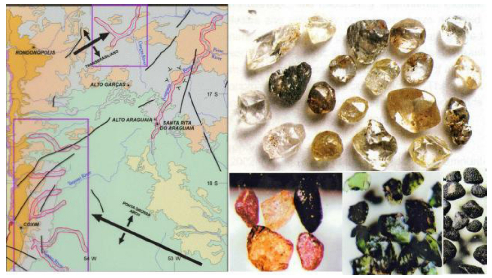

Meio Século de Exploração Mineral no Brasil - Parte 6

Resumo em Português
A sexta parte discute os desafios contemporâneos da exploração mineral, contrapondo experiências de sucesso, frustração e renovação tecnológica. O texto destaca inicialmente o caso do depósito Limoeiro, em Pernambuco, descoberto pela integração de dados aerogeofísicos e interpretação geológica moderna, demonstrando que ainda existem oportunidades relevantes fora dos distritos minerais clássicos. Em contraste, o autor relata tentativas frustradas de encontrar depósitos diamantíferos de grande porte na Bacia do Paraná, utilizando esse exemplo para mostrar que modelos promissores nem sempre produzem descobertas econômicas. O texto também aborda a descoberta do depósito Jaguar e o avanço das pesquisas de níquel e elementos do grupo da platina em Carajás, além da reavaliação de distritos maduros, como Caraíba, na Bahia, por meio de novas ferramentas geofísicas e sondagens profundas. A principal conclusão é que, embora a exploração mineral contemporânea dependa de tecnologia avançada, grandes volumes de dados e integração multidisciplinar, o sucesso continua associado às mesmas qualidades que marcaram os pioneiros da mineração brasileira: coragem, persistência, criatividade e sólida capacidade de interpretação geológica.